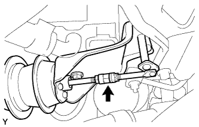

ОХЛАДИТЕЛЬ РОГ (для моделей с DPF) > ПРОВЕРКА |
| 1. ПРОВЕРЬТЕ КЛАПАН РОГ № 2 В СОБРЕ |
|  |
Подсоедините 2 вакуумных насоса, как показано на рисунке.
Подайте разряжение на внутреннюю мембрану и убедитесь, что клапан со стороны охладителя слега открывается, как показано на рисунке. Сохраняя разрежение, действующее на внутреннюю мембрану, подайте разрежение на наружную мембрану. Убедитесь, что клапан со стороны охладителя полностью открывается, как показано на рисунке, а давление при подаче разрежения составляет 84 кПа (630 мм рт. ст., 25 дюйма рт. ст.).
Сохраняя давление, созданное на предыдущем шаге, в течение 1 мин, убедитесь, что клапан не перемещается.